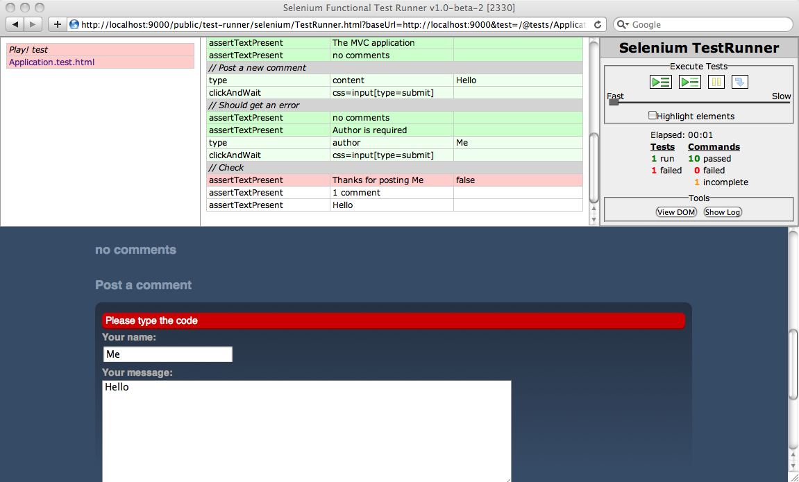
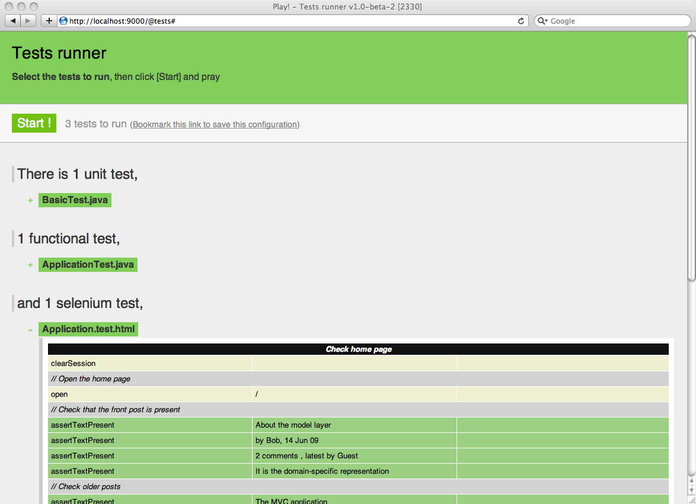

Completing the application tests
We’ve now finished the blog engine we wanted to create in this tutorial. However the project itself is not yet completely finished. To be totally confident with our code we need to add more tests to the project.
Of course we’ve already written unit tests in order to test all the yabe model layer functionality. And it’s great as it will ensure that the blog engine’s core functionality is well tested. But a web application is not only about the ‘model’ part. We need to ensure that the web interface works as expected. That means testing the yabe blog engine’s controller layer. But we even need to test the UI itself, as for example, our JavaScript code.
Testing the controller part
Play gives you a way to test directly the application’s controller part using JUnit. We call these tests ‘Functional tests’. This is because we want to test the web application’s complete functionality.
Basically a functional test calls the Play ActionInvoker directly, simulating an HTTP request. So we give an HTTP method, a URI and HTTP parameters. Play then routes the request, invokes the corresponding action and sends you back the filled response. You can then analyze it to check that the response content is like you expected.
Let’s write a first functional test. Open the yabe/test/ApplicationTest.java unit test:
import org.junit.*;
import play.test.*;
import play.mvc.*;
import play.mvc.Http.*;
import models.*;
public class ApplicationTest extends FunctionalTest {
@Test
public void testThatIndexPageWorks() {
Response response = GET("/");
assertIsOk(response);
assertContentType("text/html", response);
assertCharset("utf-8", response);
}
}
It looks like a standard JUnit test for now. Note that we use the Play FunctionalTest super class in order to get all useful utility helpers. This test is correct and just checks that the application home page (typically the / URL renders an HTML response with ‘200 OK’ as status code).
Now we will check that the administration area’s security works as expected. Add this new test to the ApplicationTest.java file:
…
@Test
public void testAdminSecurity() {
Response response = GET("/admin");
assertStatus(302, response);
assertHeaderEquals("Location", "/login", response);
}
…
Now run the yabe application in test mode using the play test command, open http://localhost:9000/@tests, select the ApplicationTest.java test case and run it.
Is it green?
Well, we could continue to test all the application functionalities this way, but it’s not the best way to test an HTML-based web application. As our blog engine is intended to be executed in a web browser, it would be better to test it directly in a real web browser. And that’s exactly what Play’s ‘Selenium tests’ do.
These kinds of JUnit based ‘Functional tests’ are still useful, typically to test Web services returning non-HTML responses such as JSON or XML over HTTP.
Writing Selenium tests
Selenium is a testing tool specifically for testing web applications. The cool thing here is that Selenium allows to run the test suite directly in any existing browser. As it does not use any ‘browser simulator’, you can be sure that you’re testing what your users will use.
A Selenium test suite is typically written as an HTML file. The HTML syntax required by Selenium is a little tedious to write (formatted using an HTML table element). The good news is that Play helps you generate it using the Play template engine and a set of tags that support a simplified syntax for Selenium scenarios. An interesting side effect of using templates is that you are not tied to ‘static scenarios’ any more and you can use the power of Play templates (looping, conditional blocks) to write more complicated tests.
However you can still write plain HTML Selenium syntax in the template and forget the specific Selenium tags if needed. It can become interesting if you use one of the several Selenium tools that generates the test scenarios for you, like Selenium IDE.
The default test suite of a newly-created Play application already contains a Selenium test. Open the yabe/test/Application.test.html file:
*{ You can use plain Selenium commands using the selenium tag }*
#{selenium}
// Open the home page, and check that no error occurred
open('/')
waitForPageToLoad(1000)
assertNotTitle('Application error')
#{/selenium}
This test should run without any problem with the yabe application. It just opens the home page and checks that the page content does not contain the ‘Application error’ text.
However like any complex test, you need to set-up a set of well-known data before navigating the application and testing it. We will of course reuse the fixture concept and the yabe/test/data.yml file that we’ve used before. To import this data set before the test suite, just use the #{fixture /} tag:
#{fixture delete:'all', load:'data.yml' /}
#{selenium}
// Open the home page, and check that no error occurred
open('/')
waitForPageToLoad(1000)
assertNotTitle('Application error')
#{/selenium}
Another important thing to check is that we have a fresh user session at the test start. The session being stored in a browser transient cookie, you would keep the same session during two successive test runs.
So let’s start our test with a special command:
#{fixture delete:'all', load:'data.yml' /}
#{selenium}
clearSession()
// Open the home page, and check that no error occurred
open('/')
waitForPageToLoad(1000)
assertNotTitle('Application error')
#{/selenium}
Run it to be sure that there is no mistake. It should be green.
So we can write a more specific test. Open the home page and check that the default posts are present:
#{fixture delete:'all', load:'data.yml' /}
#{selenium 'Check home page'}
clearSession()
// Open the home page
open('/')
// Check that the front post is present
assertTextPresent('About the model layer')
assertTextPresent('by Bob, 14 Jun 09')
assertTextPresent('2 comments , latest by Guest')
assertTextPresent('It is the domain-specific representation')
// Check older posts
assertTextPresent('The MVC application')
assertTextPresent('Just a test of YABE')
#{/selenium}
We use the standard Selenium syntax, called Selenese.
Run it (you can run in a different window just by opening the test link in a new window).
We will now test the comments form. Just add a new #{selenium /} tag to the template:
#{selenium 'Test comments'}
// Click on 'The MVC application post'
clickAndWait('link=The MVC application')
assertTextPresent('The MVC application')
assertTextPresent('no comments')
// Post a new comment
type('content', 'Hello')
clickAndWait('css=input[type=submit]')
// Should get an error
assertTextPresent('no comments')
assertTextPresent('Author is required')
type('author', 'Me')
clickAndWait('css=input[type=submit]')
// Check
assertTextPresent('Thanks for posting Me')
assertTextPresent('1 comment')
assertTextPresent('Hello')
#{/selenium}
And run it. Well it fails; and we have a serious problem here.

We can’t really correctly test the captcha mechanism, so we have to cheat. In test mode we will validate any code as a correct captcha. We know that we’re in test mode when the framework id is test. So let’s modify the postComment action in the yabe/app/controllers/Application.java file to skip this validation in test mode:
…
if(!Play.id.equals("test")) {
validation.equals(code, Cache.get(randomID)).message("Invalid code. Please type it again");
}
…
Now just modify the test case to type any code in the text field, as is:
…
type('author', 'Me')
type('code', 'XXXXX')
clickAndWait('css=input[type=submit]')
…
And now run the test again, it should work.
Measuring code coverage
Of course we haven’t written all required test cases for the application. But it’s enough for this tutorial. Now in a real-world project, how can we know if we have written enough test cases? We need something called ‘code coverage’.
The Cobertura module generates code coverage reports using the Cobertura tool. Install the module using the install command:
play install cobertura-{version}
We need to enable this module only for test mode. So add this line to the application.conf file, and restart the application in test mode.
# Import the cobertura module in test mode
%test.module.cobertura=${play.path}/modules/cobertura
Now reopen the browser at the http://localhost:9000/@tests URL, select all tests and run them. All should be green.

When all tests are passed, stop the application and cobertura will then generate the code coverage report. You can then open the yabe/test-result/code-coverage/index.html in your browser and check the report.
If you start the application again, you can also view it at http://localhost:9000/@cobertura.
As you see we’re far from testing all of the application’s cases. A good testing suite should approach 100%, even if it is of course nearly impossible to check all the code. Typically because we often need to hack in test mode, like we did for the captcha.
Next: Preparing for production.